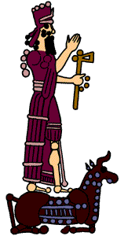

The Challenge -
Adad in the city of Karkara

Although Adad was worshipped in Babylonia he was also a very popular god in north Mesopotamia. Here he was closer to the mountains where he thundered and caused storms. Lightening was his main weapon and he was called upon in prayers to strike down the enemies of people. Adad sent floods which often destroyed large areas, particularly in the south, or sometimes he withheld rain and as a result caused drought.
|
|